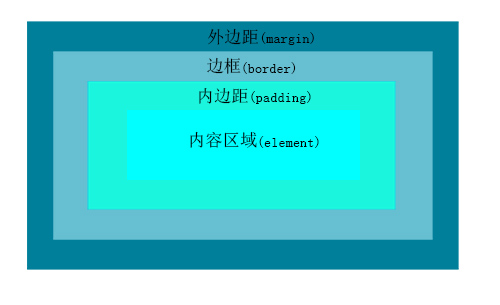

CSS盒模型
什么是盒模型?
在网页中，页面上的每个元素都被看作一个矩形框，这个框有元素的内容、内边距、边框和外边距组成。见下图：

内边距(padding) 出现在内容区域的周围。如果在元素上添加背景，那么背景会应用于由内容和内边距组成的区域。
添加 边框(border) 会在内边距的区域外边加一条线。这些线可以有多种样式， 比如实线、虚线或点线。
在边框外边的是 外边距(padding) 。外边距是透明的。一般使用它控制元素之间的间隔。
内边距、边框和外边距都是可选的，默认值为零。但是，大部分浏览器都有自己的浏览器样式。在不同的浏览器中，相同的元素可能拥有不同的margin和padding。通常我们都用通配选择器将所有元素的margin和padding设置为零来覆盖这些浏览器样式，再在后续的样式设计中由我们自己设置元素的内外边距。
* {
padding: 0;
margin: 0;
}
在CSS中，width和height指的是内容区域的宽度和高度。增加内边距、边框和外边距不会影响内容区域的尺寸，但是会增加元素框的总尺寸。假设框的 每个边 上有20像素的外边距和10像素的内边距，如果希望这个框打到200像素宽，就需要将内容的宽度设置为140像素，如下示例代码:
#myBox {
marging: 20px;
padding: 10px;
width: 140px;
}
内边距、边框和外边距可以应用于一个元素的所有边，也可以应用与单独的边。外边距还可以是负值，这可以用在多种技术中。